Life Data Analysis
Life data analysis is the study of how things, from machines to people, function over time. For example, in the automotive industry, life data analysis helps explain how long cars will last before they break down. In this example, life data is a record of how long it takes each car of a given type to break down.
Since cars can have multiple problems over their useful life, life data can also be a record of how often each car breaks down. If a car breaks down a lot, then it is considered unreliable, and if it rarely breaks down, then it is more reliable.
By collecting and modeling life data, we can make predictions about how long cars will last or how long before they will need to be repaired or replaced.
Learning Objectives
This learning module provides an introduction to Life Data Analysis. After completing this module, you should have a basic understanding of and a chance to apply the following concepts:
- Weibull analysis
- Data censoring, including Right Censored and Interval Censored Data
- Different types of Weibull models, including the 2P Weibull, 3P Weibull, and Weibayes model
- Parameter estimation methods Median Rank Regression (MRR) and Maximum Likelihood Estimation (MLE)
- Different plotting methods such as Probability Plots and Contour Plots
Weibull Analysis
The Weibull Distribution
Life data analysis is often referred to as Weibull analysis because the Weibull distribution is commonly used to model life data.
Why? Because the Weibull is a flexible distribution that can fit many different types of data.
The Normal Distribution
Take the following normal distribution with a mean of 5 and standard deviation of 1.5.
x <- seq(0, 10, by = .1)
y <- dnorm(x, mean = 5, sd = 1.5)
plot(x,y, type = "l", col = "blue", xlab = "Variable", ylab = "Probability")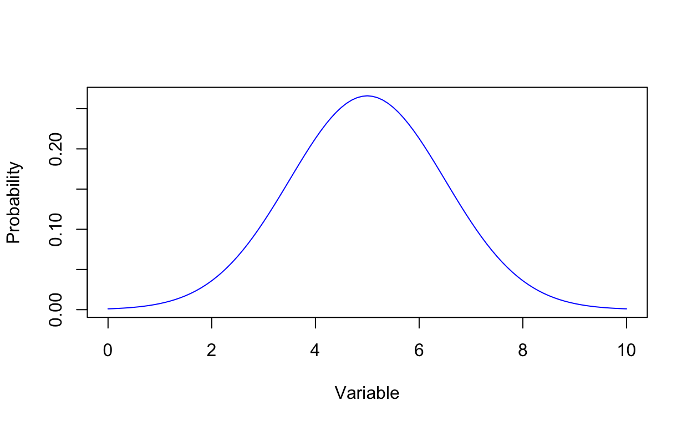
The Weibull vs Normal
The Weibull can mimic the normal and many others. Adjust the scale parameter in the slider below until the Weibull looks similar to the Normal above.
Hint: Eta should be slightly larger than the mean of the normal distribution.
The Cumulative Distribution Function
R(t) gives the cumulative probability of survival prior to time t while F(t) gives the cumulative probability of failure prior to time t
\[ R(t) = 1 - F(t) = e^{-(t/\eta)^\beta} \]
Where \(\beta\) is the shape parameter. In life data analysis \(\beta\) has a physical interpretation:
- \(\beta\) < 1 - the failure rate is decreasing (may indicate infant mortality)
- \(\beta\) = 1 - the failure rate is constant (random failures or possible mix of failure modes)
- \(\beta\) > 1 - the failure rate is increasing (may indicate wear out)
And \(\eta\) is the scale parameter or the quantile at 63.2% probability
Exercises
The Weibull Parameters
Varying Beta
Let’s vary the parameters of the Weibull distribution to see these relationships graphically.
Varying Beta changes the shape of the cumulative distribution function. Use the slider below to adjust the shape of the Weibull.
Varying Eta
Varying Eta moves the weibull distribution along the x-axis. Use the slider below to adjust the scale of the Weibull.
WeibullR
Getting Started with WeibullR
For this tutorial, we will use WeibullR: an R package for life data analysis in the tradition of Walodi Weibull.
First, check if WeibullR is installed in R and install if not.
if(!(require(WeibullR))){install.packages('WeibullR')}Next, let’s run a basic example using WeibullR. First, create some failure data for 5 different machines that fail at time 30, 49, 82, 90, and 96 respectively. Then use the MLEw2p function to fit a Weibull to the data using the MLE method.
failures<-c(30, 49, 82, 90, 96)
fit<-MLEw2p(failures, bounds=TRUE, show=TRUE)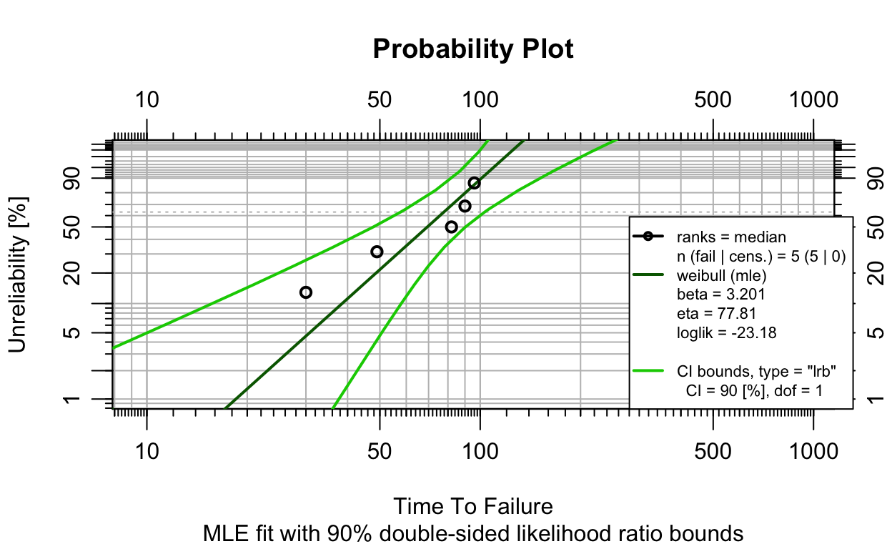
The Weibull Probability Plot
The Weibull Probability Plot shows the time (or equivalent) on the horizontal axis and the unreliability on the vertical axis. In this case, unreliability is analogous to the cumulative probability of failure. We know from the cumulative distribution function that the opposite of the failure probability is the survival probability or reliability. So an unreliability of 80% at a given time is equivalent to a reliability of 20% (100% - 80% = 20%).
Note that the horizontal axis on a probability plot is log scale, and the vertical axis is log(log(1-p)) scale, where p=(i-0.3)/(n+4) and i is the rank of the observation. By using this scale, the resulting plot of the Weibull data appears linear.
Exercises
Data Censoring
Right Censored Data
Right censored data includes suspensions or units that have operated for a period of time without failure.
Let’s add right censored data to the previous example. In addition to the 5 machines that failed, add suspensions for 3 machines that are right censored at times 100, 45, and 10 respectively.
suspensions<-c(100, 45, 10)
fit<-MLEw2p(failures, suspensions, bounds=TRUE, show=TRUE)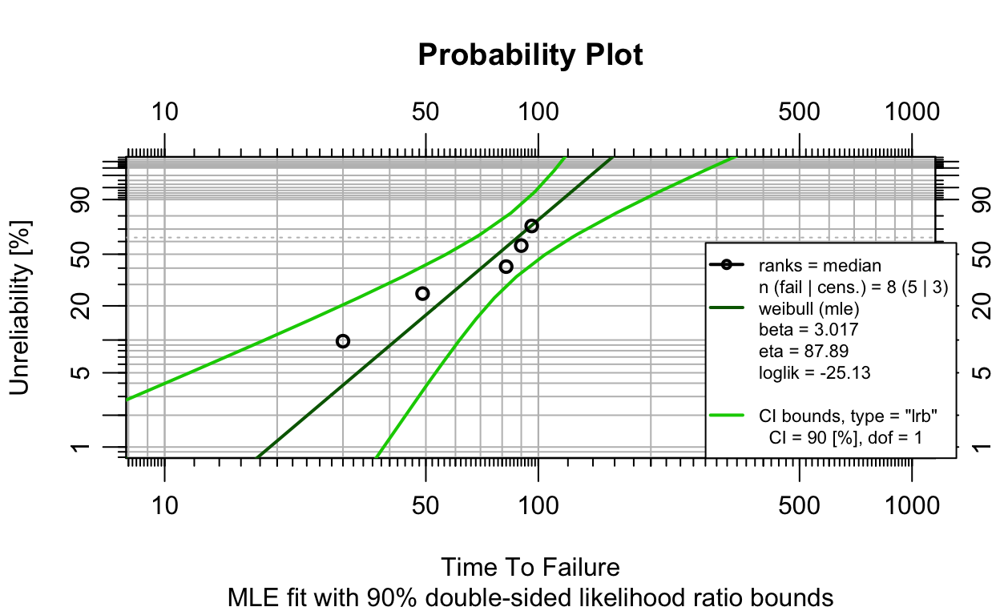
Interval Censored Data
Interval censored data is most commonly in the form of inspection data, where the failure occurred between two inspection times, the latest known working time (left entry), and the inspection time when the failure was detected (right entry). In this case, the exact failure times are unknown, but are known to have occurred within the intervals.
To create an interval censored model, let’s use the inspection data from Silkworth, 2020.
inspection_data<-data.frame(left=c(0, 6.12, 19.92, 29.64, 35.4, 39.72, 45.32, 52.32),
right=c(6.12, 19.92, 29.64, 35.4, 39.72, 45.32, 52.32, 63.48),
qty=c(5, 16, 12, 18, 18, 2, 6, 17))Then add suspension data for units surviving until the last inspection date.
suspensions<-data.frame(time=63.48, event=0, qty=73)Finally, add a fit and plot the results.
obj1<-wblr(suspensions, interval = inspection_data)
obj1<-wblr.fit(obj1, method.fit="mle", col="red")
obj1<-wblr.conf(obj1, method.conf="fm", lty=2)
plot(obj1)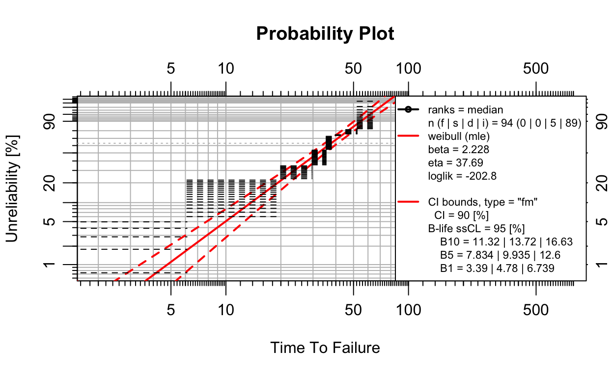
Grouped Data
Life data is often compiled into groups (i.e. a group of machines failed or survived at a certain time).
Notice how the previous example contained groups in the qty column.
Exercises
Parameter Estimation Methods
Maximum Likelihood vs Rank Regression
Median Rank Regression (MRR) is a least squares analysis based on minimizing the squared distance from the cumulative probability to the fitted model.
Maximum Likelihood Estimation (MLE) is based on estimating the parameters of the distribution by maximizing the likelihood function of the observed data.
WeibullR includes functions for both methods, such as the MRRw2p, MRRw3p functions for MRR and the MLEw2p, MLEw3p functions for MLE.
Let’s rerun the right censored example and compare the MRR and MLE methods.
MRRfit <- wblr.conf(wblr.fit(wblr(failures, suspensions, col="blue"), method.fit="rr"))
MLEfit <- wblr.conf(wblr.fit(wblr(failures, suspensions, col="red"), method.fit="mle"), method.conf="lrb")
plot.wblr(list(MRRfit, MLEfit))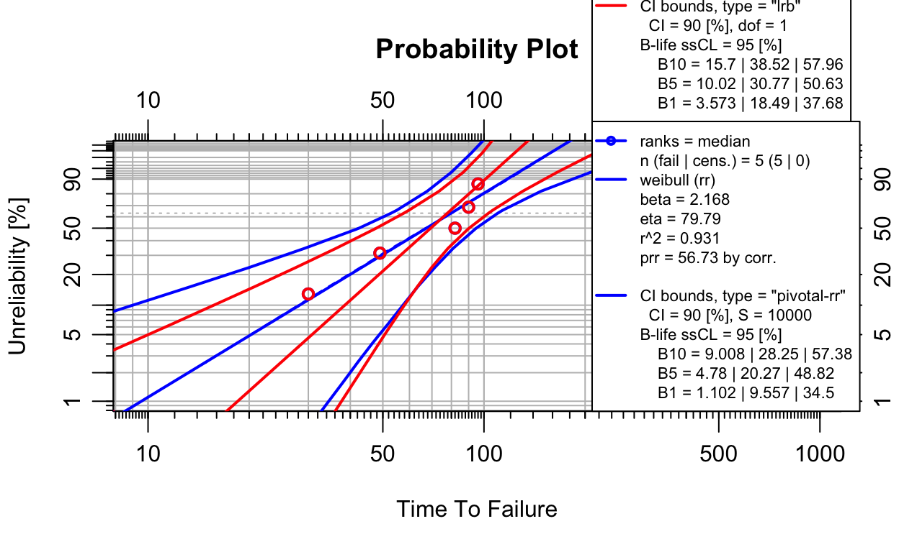
Other Weibull Models
The WeiBayes Model
A WeiBayes or 1P Weibull has a fixed \(\beta\) or shape parameter based on prior knowledge or experience. In this case, \(\beta\) is often taken from another Weibull model.
Weibayes models are typically used when failure data is limited and/or other Weibull models do not fit the data well.
Let’s rerun a previous example as a WeiBayes model with a Beta of 2.
failures<-c(30, 49, 82, 90, 96)
suspensions<-c(100, 45, 10)
obj <- wblr.fit(wblr(failures, suspensions, col="blue"), method.fit="weibayes", weibayes.beta=2)
plot(obj)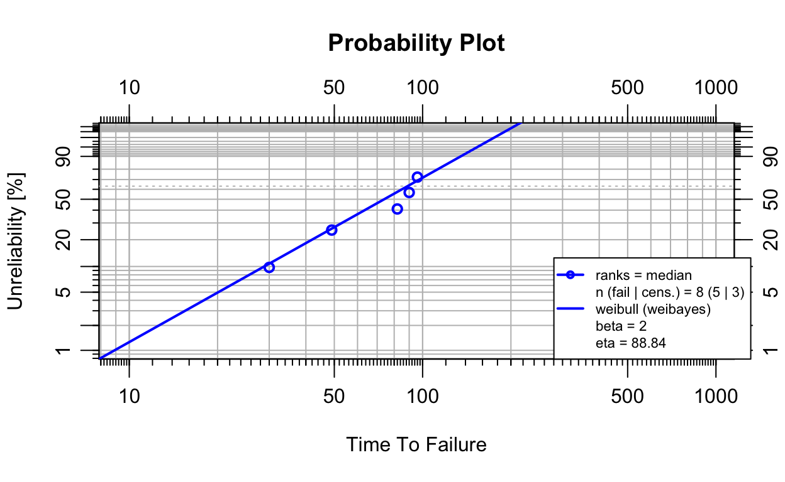
The 3-Parameter Weibull Model
The 3P Weibull has an additional parameter t0 to represent a failure free period (i.e. a machine cannot fail until after time t0). Often parts or machines must age, wear, fatigue, etc. before they can actually fail, and the 3P Weibull can model this behavior.
\[ R(t) = 1 - F(t) = e^-((t-t~0~)/\eta)^\beta \] Here is an example from “The New Weibull Handbook” by Robert Abernethy (2004). Let’s run this example as a 3P Weibull.
failures<-c(3.46623, 3.732711, 4.052996, 4.628703, 4.8157, 5.84517, 5.888313, 5.892967,
8.168362, 10.02799, 10.06062, 10.49785, 11.11493, 11.87369, 12.21122, 12.51854,
12.91357, 18.04246, 18.20712, 19.57305, 21.20873, 30.03917, 34.88001, 36.87355,
53.91168)
fit<- wblr.conf(wblr.fit(wblr(failures), dist="weibull3p"), col="darkgreen")
plot(fit)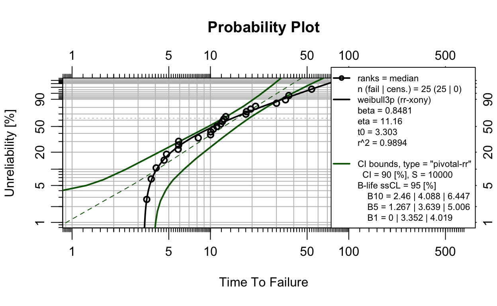
Exercises
Multi-Plots
Multi-Plots
It’s often helpful to compare multiple Weibull models on the same plot. To build a plot with multiple Weibull models, start by creating a wblr object
failures<-c(30, 49, 82, 90, 96)
obj1<-wblr(failures) Add a default fit.
obj1<-wblr.fit(obj1, col="red") Add default confidence bounds.
obj1<-wblr.conf(obj1, lwd=1) Now create a second wblr object.
failures<-c(30, 49, 82, 90, 96)
suspensions<-c(100, 45, 10)
obj2<-wblr.conf(wblr.fit(wblr(failures, suspensions, col="purple"),),lwd=1)Add the 2 wblr objects to a list and plot both objects in a single chart.
plot.wblr(list(obj1, obj2))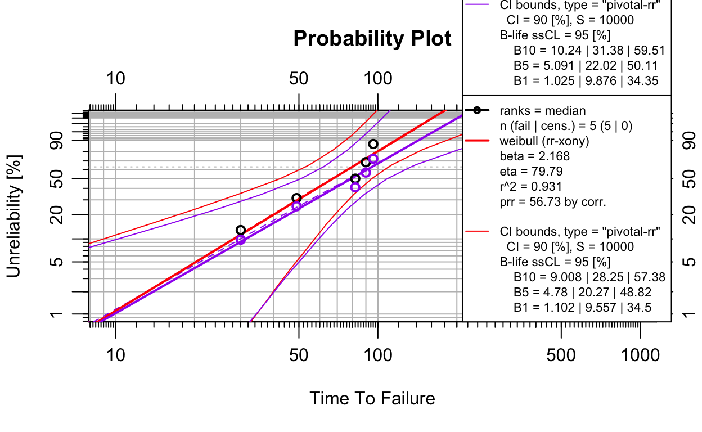
Exercises
Competing Failure Modes
A part or machine may have multiple different failure modes (e.g. corrosion, fatigue, overload), where each failure mode has a different distribution of time to failure.
A basic Weibull with competing failure modes tends to -
- Not fit the data well
- Look random (Beta of 1)
To see this behavior graphically, first create some Weibull data representing 3 different failure modes.
set.seed(123)
data <- data.frame(
time = c(rweibull(5, 0.5, 20), rweibull(10, 1, 10), rweibull(5, 2, 5), rweibull(100, 2, 10)),
event = c(rep(1, 20), rep(0, 100)),
failure_mode = c(rep("A", 5), rep("B", 10), rep("C", 5), rep("", 100))
)Fit an overall Weibull to the data.
obj <- wblr.conf(wblr.fit(wblr(data)))
plot(obj, col="darkgreen", is.plot.legend = FALSE)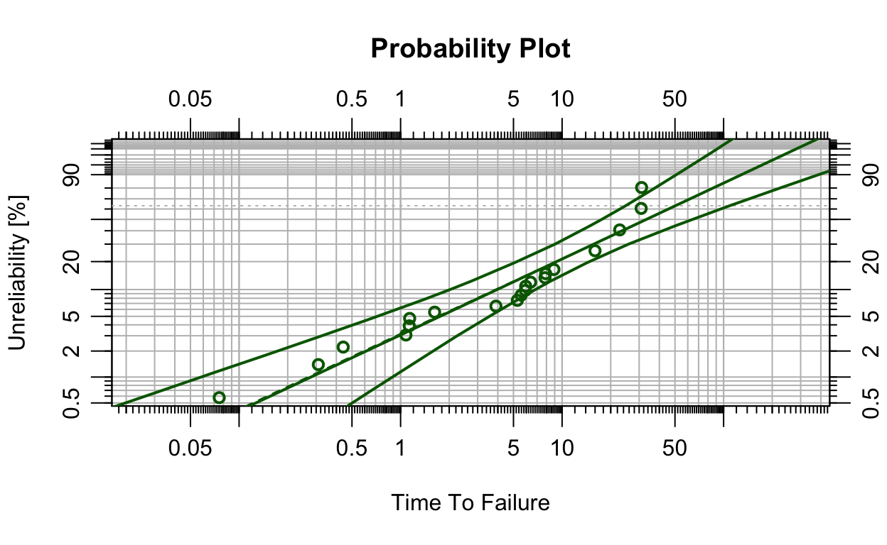
Now create a separate data set for each failure mode.
dat1 <- data
dat2 <- data
dat3 <- data
dat1$event[dat1$failure_mode != "A"] <- 0
dat2$event[dat2$failure_mode != "B"] <- 0
dat3$event[dat3$failure_mode != "C"] <- 0Finally, fit a wblr object for each failure mode and create a multi-plot.
obj1 <- wblr.fit(wblr(dat1, col="blue"))
obj2 <- wblr.fit(wblr(dat2, col="red"))
obj3 <- wblr.fit(wblr(dat3, col="orange"))
plot.wblr(list(obj1, obj2, obj3), is.plot.legend = FALSE)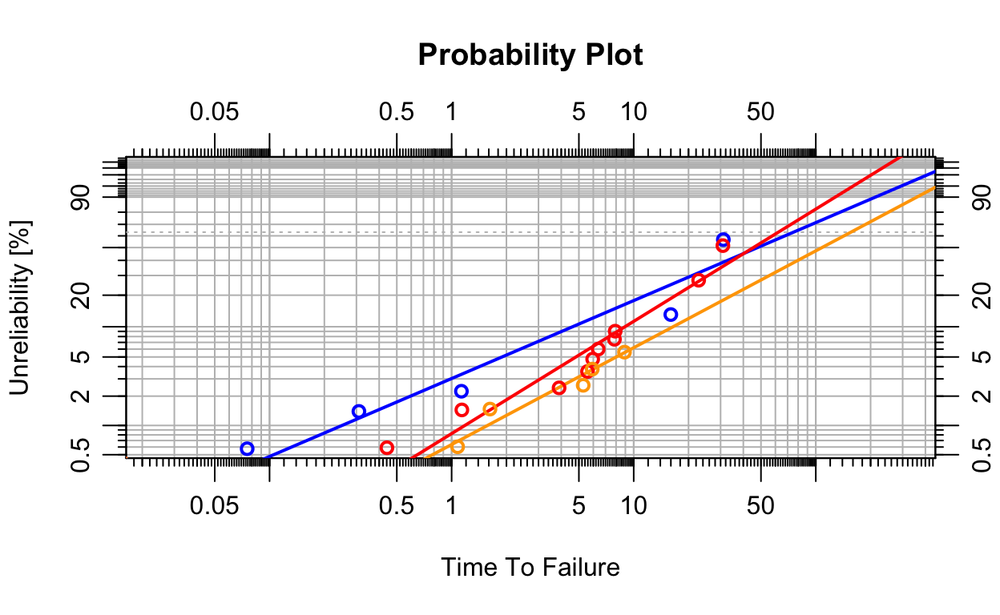
Contour Plots
Another way to compare multiple Weibull models is with contour plots. In this context, a contour plot consists of curves or contours that represent the Weibull distribution in terms of the parameters Beta and Eta.
Let’s start by rerunning the first example and building a contour plot.
failures<-c(30, 49, 82, 90, 96)
obj <- wblr.conf(wblr.fit(wblr(failures, col="blue"), method="mle"), method="lrb")
plot_contour(obj, CL=0.9)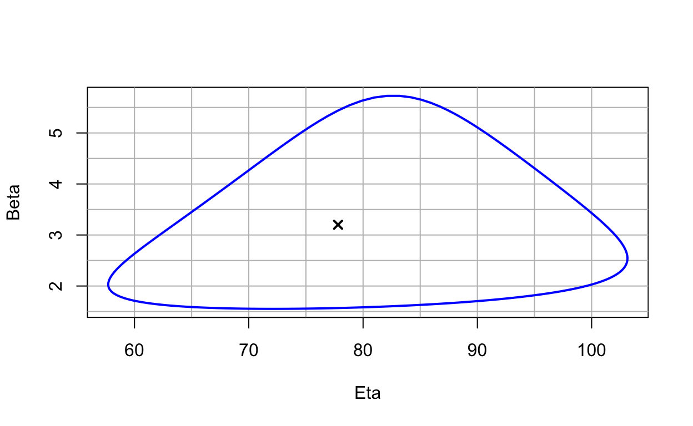
The Weibull contour plot shows Eta on the horizontal axis, Beta on the vertical axis, and the contour plot at the selected probability (90% in this case).
Comparing Contour Plots
When comparing Weibull models, it may be helpful to think about contour plots like Venn diagrams. When contours overlap, then similarities probably exist between the distributions. When contours have no overlap, then the distributions are probably different (at the selected probability).
To visualize these concepts, let’s rerun the competing failure mode example and build contour plots for each failure mode at a probability level of 90%.
obj1 <- wblr.conf(wblr.fit(wblr(dat1, col="blue"), method="mle"), method="lrb")
obj2 <- wblr.conf(wblr.fit(wblr(dat2, col="red"), method="mle"), method="lrb")
obj3 <- wblr.conf(wblr.fit(wblr(dat3, col="orange"), method="mle"), method="lrb")
plot_contour(list(obj1, obj2, obj3), CL=0.9)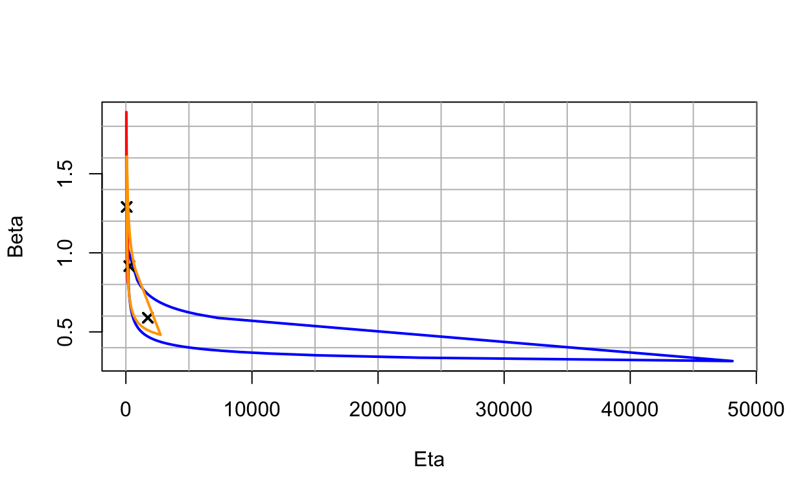
Challenge: rerun the competing failure mode example with a different number in the set.seed function and see if the same results hold true.
Wrapping Up
To Get Help
To get help with a specific function in WeibullR, type a question mark before the function name.
?MRRw2pFor more help with the WeibullR package.
help(package="WeibullR")More resources
WeibullR.plotly is a package for building interactive Weibull models.
WeibullR.shiny is a web application for life data analysis.
References
Abernethy, R.B. (2004) The New Weibull Handbook. Fifth Edition.
Aden-Buie G, Schloerke B, Allaire J, Rossell Hayes A (2023). learnr: Interactive Tutorials for R. https://rstudio.github.io/learnr/, https://github.com/rstudio/learnr.
Silkworth, David. (2020). WeibullR: An R Package for Weibull Analysis for Reliability Engineers. 43-53. https://doi.org/10.35566/isdsa2019c3.
Silkworth D, Symynck J (2022). WeibullR: Weibull Analysis for Reliability Engineering. R package version 1.2.1, https://CRAN.R-project.org/package=WeibullR.